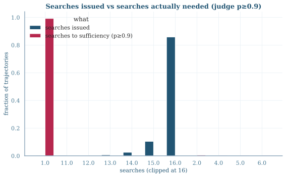
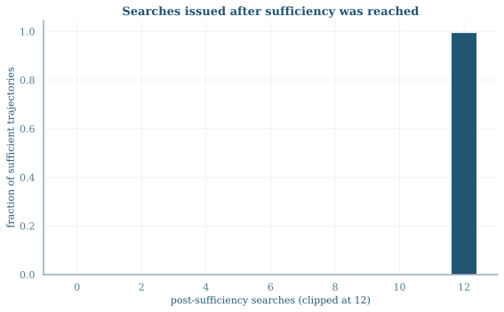
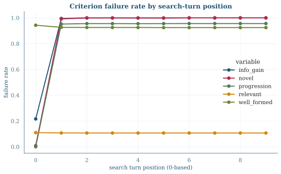
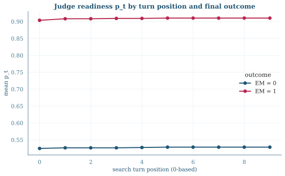
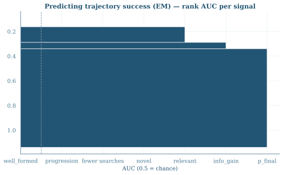

Per-turn rubric judging of the existing step-75 GRPO eval rollout dump
(p8b_eval_grpo_s75, greedy decoding, 32-turn horizon). One gpt-oss-120b call per
trajectory grades every search turn on five binary criteria
(well_formed, relevant, novel, progression, info_gain)
and estimates readiness pt — the probability the gold answer is derivable from evidence
retrieved in turns 1..t — plus sufficiency_turn (first t with p ≥ 0.9). The judge sees gold
answers (training-time privilege) and never sees the agent's <think> text.
| Slice | N traj | EM | searches / rollout | post-sufficiency searches |
|---|---|---|---|---|
| NQ_rand1000 | 1000 | 0.428 | 17.1 | 10.8 |
| TriviaQA_rand1000 | 1000 | 0.577 | 17.0 | 11.8 |
progression (a multi-hop
criterion) is rarely applicable and sufficiency lands on the first search by construction of the task mix.
The multi-hop picture arrives with the temp-1.0 collection from ckpts 25/50/75.
The judge says evidence sufficient to answer arrives after 1.02 searches on average (for the 70.5% of trajectories that ever reach p ≥ 0.9). The policy's search count is unmoored from it: 99.9% of sufficient trajectories keep searching, issuing a mean of 16.1 post-sufficiency searches; 66.3% of all search turns occur after sufficiency.


The 29.5% of trajectories that never reach p ≥ 0.9 have final readiness 0.53 on average when they fail (EM=0 mean pfinal = 0.53 vs 0.91 for EM=1) — under-retrieval exists, but it is the minority failure mode; the majority pattern is retrieving enough immediately and then spinning.
Criterion failures are position-dependent in a way that identifies the mechanism. The first search
is nearly always sensible: novel (99.2%), progression-valid (100%), info-gaining (78.4%). By position ≥3,
novel fails on 99.96% of turns and info_gain on 99.98% — the policy re-issues the same
(or a near-duplicate) query and re-retrieves the same documents, turn after turn. The mean longest
consecutive non-novel run is 16.0 turns under greedy decoding.

| Criterion | fail rate, turn 0 | fail rate, turns ≥3 | fail rate, all turns |
|---|---|---|---|
novel | 0.008 | 0.9996 | 0.941 |
info_gain | 0.216 | 0.9998 | 0.954 |
progression | 0.000 | 0.956 | 0.900 |
well_formed | 0.943 | 0.925 | 0.926 |
relevant | 0.110 | 0.108 | 0.108 |
well_formed and relevant are position-independent: they measure query style
(the policy pastes the question verbatim — 92.6% well_formed failure everywhere) and topicality (89.2% of
queries are on-chain), not the loop. The loop is entirely captured by novel / info_gain /
progression.
Mean pt by turn position, split by final outcome: successful trajectories saturate readiness at the first search (p ≈ 0.9 at position 0) and stay flat — later searches add nothing the judge can see. Failed trajectories plateau near 0.5 and never recover, consistent with "retrieved the wrong entity's page and kept re-retrieving it" rather than progressive refinement. p0 = 0 for every trajectory (the judge treats no question as answerable without retrieval).

Rank AUC of trajectory-level signals against EM (0.5 = chance). This is the Phase-1 discrimination readout that feeds criterion selection for the pen arm and validates pt for redist.

novel=0 (94% of turns under greedy, position-targeted, mechanism-aligned) and t > sufficiency_turn (66% of turns). Drop well_formed (§6). λ on the EM scale stays at 0.02–0.05: with ~10+ flagged turns per greedy trajectory the summed penalty must not swamp the EM outcome term at temp 1.0 (~5.4 turns, fewer flags).# rubric judging (worker): serve gpt-oss-120b + judge the dump
DUMPS="grpo_s75=/mnt/hdfs/.../p8b_eval_grpo_s75/rollout_eval_grpo_s75.jsonl.zst" \
GOLDSET=/mnt/hdfs/.../data_asearcher_eval/asearcher_eval.parquet MAX_TRAJS=2000 \
bash scripts/asearcher/p8b_rubric_judge_worker.sh
# this analysis + figures
uv run docs/reports/2026-08-14_rubric_error_patterns/make_plots.py